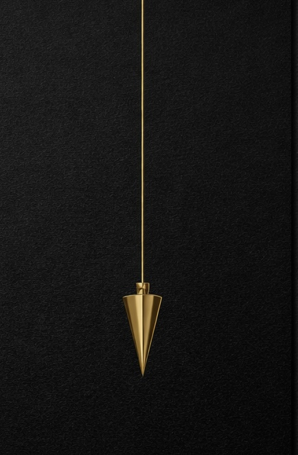

Node 001 — Baseline
The system appears stable until pressure is applied. What holds remains. What does not remains visible.


The system appears stable until pressure is applied. What holds remains. What does not remains visible.
No automated intake is performed here. Signal is placed directly. Interpretation is withheld on entry.
Bridge is the field-facing channel. Contact is the administrative channel.
This surface is not a dashboard and does not perform certainty. It receives contact, exposes condition, and leaves resolution incomplete where resolution does not hold.
The page is treated as retained material rather than a bright interface. It should feel handled, printed, stored, and returned to use without belonging to any single moment.